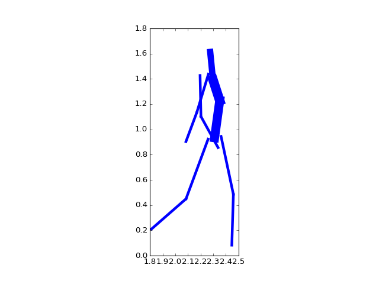
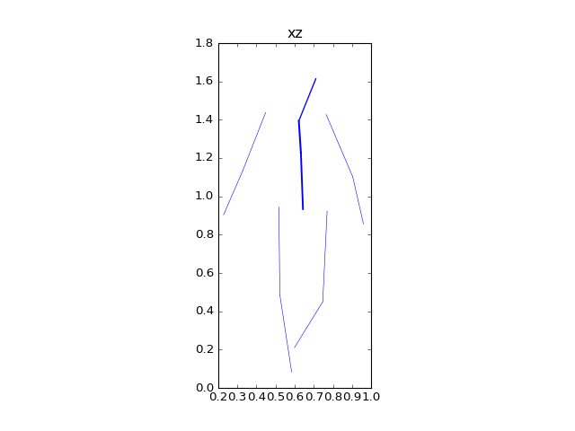

Body¶
-
class
pylayers.mobility.ban.body.Body(_filebody='John.ini', _filemocap=[], _filewear=[], traj=[], unit='cm', loop=True, centered=True, multi_subject_mocap=False, color='white')[source]¶ Bases:
pylayers.util.project.PyLayersClass to manage a Body model
Methods
load([_filebody, _filemocap, unit, _filewear])load a body ini file center([force])centering the body posvel(traj, t)calculate position and velocity loadC3D([filename, nframes, unit])load nframes of motion capture C3D file settopos([traj, t, cs, treadmill, p0])translate the body on a time stamped trajectory setccs([frameId, topos])set cylinder coordinate system setdcs([topos, frameId])set device coordinate system (dcs) from a topos geomfile(**kwargs)create a geomview file from a body configuration plot3d([iframe, topos, fig, ax, col])scatter 3d plot movie(**kwargs)creates a geomview movie cylinder_basis_k(frameId)cylinder basis k cyl_antenna(cylinderId, l, alpha[, frameId])cylinder antenna Methods Summary
anim()animate body animc3d()animate c3d file body_link([topos, frameId])body link c3d2traj()convert c3d file to trajectory ccsfromc3d(config)Create ccs from C3D file center([force])centering the body chronophoto(**kwargs)chronophotography of the body movement cyl_antenna(cylinderId, l, alpha[, frameId])cylinder antenna cylfromc3d([centered])Create cylinders from C3D file cylinder_basis_k(frameId)cylinder basis k dpdf([tr, tunit, poffset])device position dataframe export_csv([unit, df, _filename, col])frame2time(f)geomfile(**kwargs)create a geomview file from a body configuration getdevT([id, t, frameId])get device orientation getdevp([id])get device position init_traj()create trajectory object from given trajectory or mocap intersectBody(A, B[, topos, frameId, cyl])intersect Body intersectBody3(A, B[, topos, frameId])intersect body new version load([_filebody, _filemocap, unit, _filewear])load a body ini file loadC3D([filename, nframes, unit])load nframes of motion capture C3D file movie(**kwargs)creates a geomview movie network()evaluate network topology and dynamics plot3d([iframe, topos, fig, ax, col])scatter 3d plot posvel(traj, t)calculate position and velocity rdpdf()real device position dataframe setacs()set antenna coordinate system (acs) from a topos or a set of frames setccs([frameId, topos])set cylinder coordinate system setcs([topos, frameId])set coordinates systems from a topos or a frame id setdcs([topos, frameId])set device coordinate system (dcs) from a topos settopos([traj, t, cs, treadmill, p0])translate the body on a time stamped trajectory show(**kwargs)show a 2D plane projection of the body show3(**kwargs)create geomfile for frame iframe time2frame(t)Methods Documentation
-
body_link(topos=True, frameId=0)[source]¶ body link
Parameters: topos : boolean
default True
frameId : int
used in case topos == False. Indicates the frame Id.
Returns: link_vis : np.array (,nlinks)
number of intersected cylinder on the link
links is a list of couple of strings inticating the different links
between devices.
-
center(force=False)[source]¶ centering the body
Returns: self.pg : center of gravity
self.vg : velocity
self.d : set of centered frames
self.smocap : integrated distance
self.vmocap : averaged velocity
Notes
The center method creates a centered version of the motion capture data stored in self.d It also calculates : self.smocap : total distance along trajectory self.vmocap : averaged speed along trajectory
Here only the projection of the body centroid in the plan 0xy is calculated
-
chronophoto(**kwargs)[source]¶ - chronophotography of the body movement
- (a.k.a. position as a function of time)
Parameters: tstart : float
starting time in second
tend : float
ending time in second,
tstep : float
time step between tstart and tend
sstep : float
spatial step (distance between 2 instant)
planes : list
list of planes to be displayed [‘xz’,’xy’,’yz’]
dev : bool
show devices
dev : bool
show devices ids
See Also
——–
http://en.wikipedia.org/wiki/Chronophotography
-
cyl_antenna(cylinderId, l, alpha, frameId=0)[source]¶ cylinder antenna
Parameters: cylinderId : int
index of cylinder
l : distance from origin of cylider
alpha : angle from reference direction
frameId : frameId
-
cylfromc3d(centered=False)[source]¶ Create cylinders from C3D file
Parameters: centered : boolean
False
-
dpdf(tr=[], tunit='ns', poffset=False)[source]¶ device position dataframe return a dataframe with body and devices positions along the self.traj
Parameters: tr : ndarray
timerange
Returns: cdf: pd.DataFrame
complete device data frame
-
export_csv(unit='mm', df=[], _filename='default.csv', col=['dev_id', 'dev_x', 'dev_y', 'dev_z', 'timestamp'], **kwargs)[source]¶
-
geomfile(**kwargs)[source]¶ create a geomview file from a body configuration
Parameters: iframe : int
frame id (useless if topos==True)
verbose : boolean
topos : boolean
frame id or topos
wire : boolean
body as a wire or cylinder
ccs : boolean
display cylinder coordinate system
cacs : boolean
display cylinder antenna coordinate system
acs : boolean
display antenna coordinate system
struc : boolean
displat structure layout
tag : string
filestruc : string
name of the Layout
Notes
This function creates either a 3d representation of the frame iframe or if topos==True a representation of the current topos.
-
getdevT(id=-1, t=[], frameId=[])[source]¶ get device orientation
Parameters: id : str | list
device id.
frameId : int
frameid
t : float
time
Returns: device orientation
-
getdevp(id=-1)[source]¶ get device position
Parameters: id : str | list
device id.
frameId : int
frameid
t : float
time
Returns: device position
-
intersectBody(A, B, topos=True, frameId=0, cyl=[])[source]¶ intersect Body
Parameters: A : np.array (3,)
B : np.array (3,)
topos : boolean
frameId : 0
cyl : list
exclusion list
Returns: intersect : np.array (,ncyl)
O : AB not intersected by cylinder 1 : AB intersected by cylinder
-
intersectBody3(A, B, topos=True, frameId=0)[source]¶ intersect body new version
Parameters: A
B
topos
frameId
cyl
Returns: intersect : np.array (,ncyl)
O : AB not intersected by cylinder 1 : AB intersected by cylinder
-
load(_filebody='John.ini', _filemocap=[], unit=[], _filewear=[])[source]¶ load a body ini file
Parameters: _filebody : body short filename Notes
A body .ini file contains 4 sections
- section [nodes]
Node number = Node name + section [cylinder] CylinderId = {‘t’:tail node number, ‘h’:head node number , ‘r’: cylinder’ radius} + section [wearable] + section [mocap]
-
loadC3D(filename='07_01.c3d', nframes=-1, unit='cm')[source]¶ load nframes of motion capture C3D file
Parameters: filename : string
file name
nframes : int
number of frames
unit : str (mm|cm|mm
unit of c3d file
rot : list [‘x’,’y’,’z’]
swap axes of the c3d file
-
movie(**kwargs)[source]¶ creates a geomview movie
Parameters: lframe : []
verbose : False
topos : True
wire : True
ccs : False
dcs : False
struc : True
traj : []
filestruc:’DLR.off’
See also
-
network()[source]¶ evaluate network topology and dynamics
This function evaluates distance, velocity and acceleration of the radio network nodes
self.D2 : distances between radio nodes self.V2 : velocities between radio nodes self.A2 : accelerations between radio nodes
-
plot3d(iframe=0, topos=False, fig=[], ax=[], col='b')[source]¶ scatter 3d plot
Parameters: iframe : int
topos : boolean
fig :
ax :
col : string
Returns: fig,ax
-
posvel(traj, t)[source]¶ calculate position and velocity
- traj : Tajectory DataFrame
- nx3
- t : float
- trajectory time for evaluation of topos
Returns: kf : frame integer index
kt : trajectory integer index vsn : normalized speed vector along motion capture trajectory (source) wsn : planar vector orthogonal to vsn vtn : normalized speed vector along motion trajectory (target) wtn : planar vector orthogonal to wtn
rac{s_k}{s_{max}} s_{max}`
k_f is the index of the topos motion capture into the MOCAP
- |__________|__________|____________|___________|_____
- kf=2
tmin tmax 0 smax sk
-
setccs(frameId=0, topos=False)[source]¶ set cylinder coordinate system
Parameters: frameId : int
frame id in the mocap dataframe (default 0)
topos : boolean
default False
Returns: self.ccs : ndarray (nc,3,3)
Notes
There are as many frames as cylinders (body graph edges)
ccs is a MDA (nc x 3 x 3 ) where nc denotes the number of cylinders
For each cylinder there is an attached coordinate systems
1st vector
2nd
-
setcs(topos=True, frameId=0)[source]¶ set coordinates systems from a topos or a frame id
Parameters: topos : boolean
default : True
frameId : int
default 0
See also
pylayers.mobility.ban.body.setccs,pylayers.mobility.ban.body.setdcs,pylayers.mobility.ban.body.setacs
-
setdcs(topos=True, frameId=0)[source]¶ set device coordinate system (dcs) from a topos
This method evaluates the set of all dcs. It provides the information necessary for device placement on the body.
If N is the number of antenna an dcs is an MDA of size 3x4xN
Parameters: topos : boolean
default : True
frameId : int
default 0
Returns: self.dcs : dictionnary
Examples
>>> import numpy as np >>> import pylayers.mobility.trajectory as tr >>> import pylayers.mobility.ban.body as body >>> import matplotlib.pyplot as plt >>> time = np.arange(0,10,0.1) >>> v = 4000/3600. >>> x = v*time >>> y = np.zeros(len(time)) >>> traj = tr.Trajectory() >>> traj.generate() >>> bc = body.Body() >>> bc.settopos(traj,2.3,2) >>> bc.setccs(topos=True) >>> bc.setdcs() >>> bc.show(plane='yz',color='b',widthfactor=80) >>> plt.show()
(Source code, png, hires.png, pdf)

-
settopos(traj=[], t=0, cs=True, treadmill=False, p0=array([ 0., 0.]))[source]¶ translate the body on a time stamped trajectory
Parameters: traj : ndarray (3,N)
t,x,y
t : float
time for evaluation of topos (seconds) this value should be in the
range of the trajectory timestamp
Returns: self.topos
self.vtopos
See also
pylayers.util.geomutil.affineNotes
topos is the current spatial global position of a body configuration. this method takes as argument a trajectory and a time value t in the trajectory time-scale.
Examples
>>> import numpy as np >>> import pylayers.mobility.trajectory as tr >>> import pylayers.mobility.ban.body as body >>> import matplotlib.pyplot as plt >>> time = np.arange(0,10,0.1) >>> v = 4000/3600. >>> x = v*time >>> y = np.zeros(len(time)) >>> traj = tr.Trajectory() >>> traj.generate() >>> John = body.Body() >>> John.settopos(traj,2.3) >>> fig,ax = John.show(plane='xz',color='b') >>> plt.title('xz') >>> plt.show()(Source code, png, hires.png, pdf)

-
show(**kwargs)[source]¶ show a 2D plane projection of the body
Parameters: frameiId : int
plane : string
‘yz’ | ‘xz’ | ‘xy’
widthfactor : int
topos : boolean
default False
offset = np.array()
1,3
Todo
-
{kind=link}
{kind=link}
{kind=link}
{kind=link}